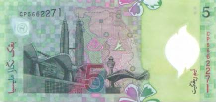
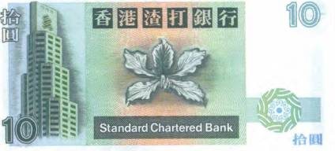
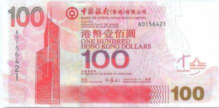
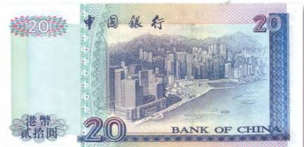
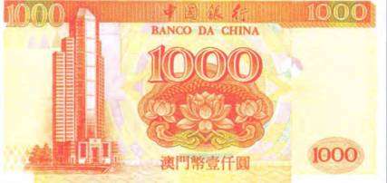
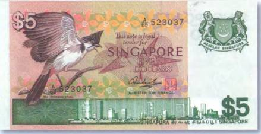
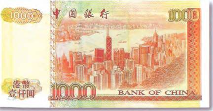
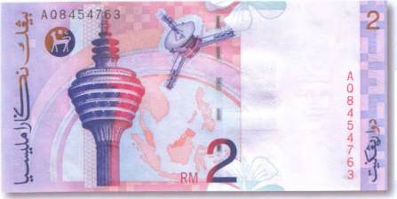
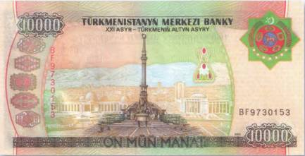

Тайны бумажных денег : Царапающие небо

По библейской легенде, Бог наказал строителей Вавилонской башни, смешав их языки и рассеяв несчастных по всему свету. Кстати, в Библии нигде не говорится о том, что именно Бог разрушил величайшее из сооружений (как до сих пор утверждают многие). Со слов «отца истории» Геродота, Вавилонская башня состояла из восьми поставленных друг на друга башен (по данным археологии, их было семь). А по внешней стороне всего сооружения, по кругу к вершине, поднималась ступенчатая лестница. О действительной высоте несохранившегося здания можно лишь догадываться. Мнения же современных ученых по этому вопросу сильно расходятся. Уже назывались цифры от нескольких десятков метров до нескольких сотен. Однако большинство из них сходятся во мнении, что эра настоящих «Вавилонских башен» только еще начинается.

На пластиковой малазийской банкноте 2004 г. в 5 ринггитов запечатлено четвертое по высоте здание мира — башни-близнецы Петронас-Твин-Тауэрс (Petronas Twin Towers) (рис. 235).
Родиной этих небоскребов высотой в 452 м является столица Малайзии Куала-Лумпур. Здание считается своеобразной визитной карточкой страны. Воздвигнутое в 1992–1998 гг. оно до 2003 г. оставалось и самым высоким на планете. Башни имеют по 88 этажей каждая, и на уровне между 41-ми 42-м этажами соединены стальным мостом-галереей, который весит 750 т и имеет в длину 58 м. Мост был открыт для посетителей только в 2000 г. В Петронас-Твин-Тауэрс, помимо большого количества офисов, располагались несколько супермаркетов, музей «Petrosains», художественная галерея и даже симфонический оркестр. За свою пока еще недолгую историю существования башни-близнецы даже успели «сняться» в Голливуде, послужив декорациями для фильма «Западня» (1999) с Шоном Коннери и Катариной Зитой-Джонс в главных ролях.

Актуальные доллары Гонконга, собственно говоря, как и уже вышедшие из обращения, могут продемонстрировать сразу несколько видов различных высоток. Это и Сити-Холл (City Hall) на купюрах 1970-1980-х гг., и выполненное в виде ступенчатой пирамиды банковское здание на 10 долларах 1993 г. (рис. 236).
Но, пожалуй, самым эффектным среди небоскребов финансового центра Азии является здание Банка Китая — Бэнк оф Чайна Тауэр (Bank of China Tower). Его несколько нереальные формы (архитектор Минг Пай), словно бы проявившиеся из тумана далекого будущего, украшают купюру в 100 гонконгских долларов 2003 г. (рис. 237).
Не зря его считают одним из красивейших строений китайской финансовой метрополии, имеющим 70 этажей. Его строительство было завершено в 1990 г. Крыша небоскреба отстает от земли на 305 м, в то время как шпиль одной из его антенн достигает 367 м. В списке самых высоких зданий мира он занимает 16-е место.


Громада Банка Китая лишь немногим уступает второму по высоте зданию в Гонконге, к тому же еще и находящемуся в непосредственной близости. Это — Сентрал-Плаза (Central Plaza) высотой в 374 м. Оно имеет 78 этажей и было построено в 1992 г. Его контуры угадываются на рисунке банкноты китайского банка в 20 долларов 1998 г. (рис. 238).
Это крайнее слева здание. А вот первые два высочайших в мире строения на сегодняшний день на деньгах пока не запечатлены. Это небоскреб Бурдж-Халифа в Объединенных Арабских Эмиратах, возвышающийся на невероятные 828 м, его открытие состоялось 4 января 2010 г. И второе по высоте здание мира в городе Тайбэй (на острове Тайвань) — финансовый центр Тайпай 101 (Taipei 101). По своей форме напоминающая побег бамбука башня взлетела к облакам на 508 м (101 этаж).
А строительство этого чуда инженерной мысли из стекла и бетона обошлось почти в 2 млрд долларов. Его архитекторы уверены, что Тайпай 101 — самое сейсмически устойчивое здание на Земле. Оно способно выдержать землетрясение в 8 баллов (на Тайване ежегодно регистрируется до 40 тыс. подземных толчков). Весь секрет в том, что между 88-м и 92-м этажами здания на тросах толщиной в руку подвешен гигантский (5,5 м в диаметре) шар из стали. Его вес — 660 т. Предназначение этого позолоченного ядра в том, чтобы предотвращать чрезмерные колебания небоскреба во время землетрясений и тайфунов. Башня может похвастать еще и самыми скоростными лифтами. С их помощью можно подняться на смотровую площадку, расположенную в вестибюле 89-го этажа за смехотворные 37 секунд.
Оборотную сторону банкноты Макао в 20 патак 2001 г. занимает панорама современного города. Там и тут к небу тянутся многоэтажки. Бывшая португальская колония за последние десятилетия в корне изменила свой внешний вид. Еще каких-нибудь 20–30 лет назад Макао считалась Меккой для желающих снять солидный исторический фильм. Вкладывать деньги в дорогостоящие декорации не требовалось — в городе было полным-полно строений, выполненных в строгом колониальном стиле. Но ничего не стоит на месте, и на смену вызывающим ностальгию виллам и дворцам пришли стеклобетонные монолиты, как изображенное на купюре в 1000 патак 1995 г. здание китайского банка (рис. 239).

Современные виды городов с устремленными к небу сигарами многоэтажных зданий встречаются и на банкнотах Сингапура, как, например, на лицевой стороне 5 долларов 1976 г. (рис. 240).
И все-таки больше всего их на деньгах Гонконга. Это и 1000 долларов 1998 г., выпущенные банковской корпорацией Гонконга и Шанхая, и 1000 долларов 2001 г. Банка Китая с великолепным видом на Sky Line метрополии (рис. 241).



В столице Малайзии Куала-Лумпур, или, как ее еще любя называют малайцы, Кей-Эл, полно достопримечательностей. И наверное, каждый турист, какими бы высокими ни были его запросы, сможет открыть там для себя что-нибудь новое, необычное. Для тех же, кто путешествует по свету в погоне за острыми ощущениями, Куала-Лумпур и вовсе представляет собой настоящую Мекку. Одно только посещение телевизионной башни города чего стоит! Манара (Мапага) имеет в высоту 421 м. А с ее 276-метровой смотровой площадки открывается незабываемый вид на главный малазийский город. Изображение телебашни Манара присутствует на 2 ринггитах Малайзии 1996 г. (рис. 242).

В октябре 2001 г. в Ашхабаде был открыт Монумент независимости, сразу же ставший одним из главных символов современной столицы Туркменистана. Выложенная белым мрамором и отделанная золотом стрела вознеслась ввысь на 118 м. В скульптурном окружении монумента не только изображения 20 исторических и государственных деятелей страны (в том числе и бывшего президента), но и пятиглавый орел — геральдический знак президентского штандарта. Кстати, пять голов золотой птицы олицетворяют пять областей страны. Монумент занял почетное место на туркменской купюре в 10 000 манатов 2003 г. (рис. 243).